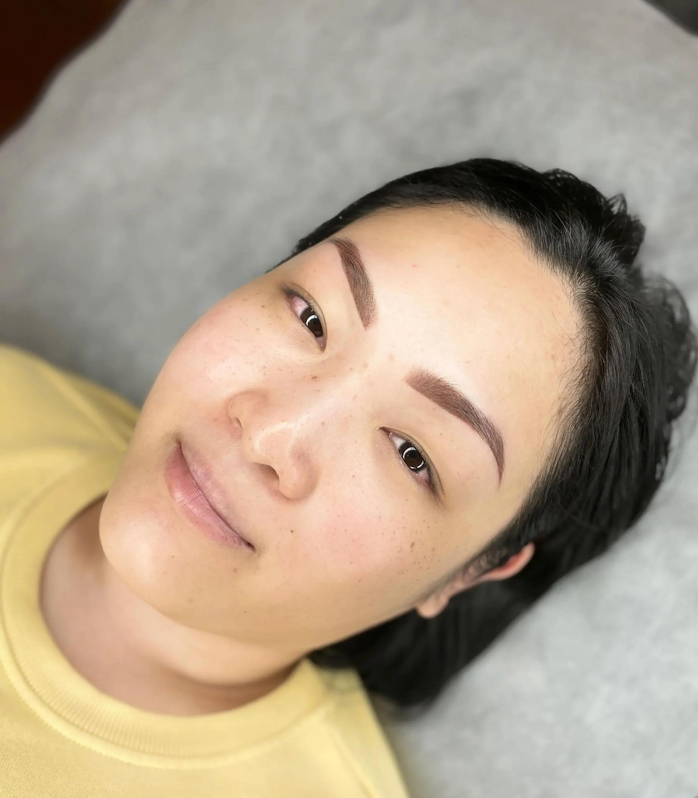
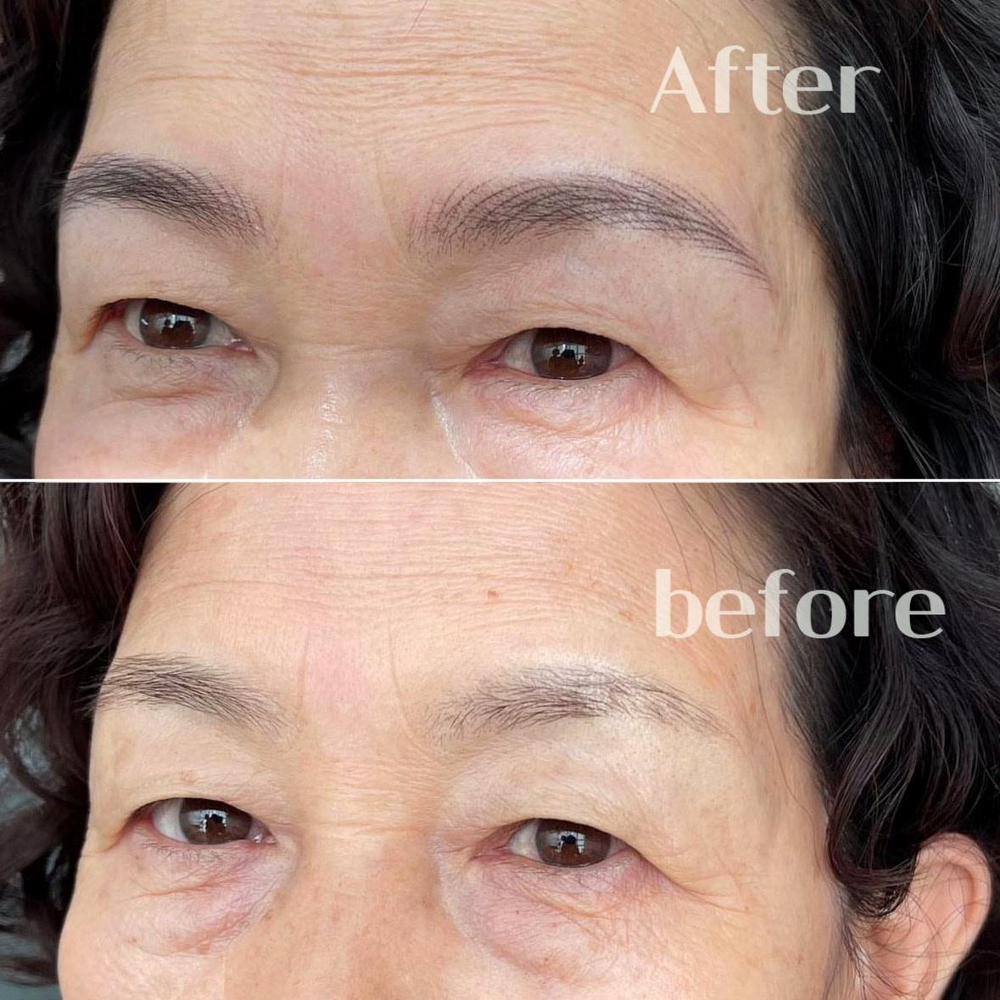

Bao Nhiêu Tuổi Được Phun Mày? Độ Tuổi Phù Hợp Và Những Điều Cần Biết
Phun mày ngày càng trở thành phương pháp làm đẹp được nhiều người lựa chọn nhờ khả năng giúp gương mặt cân đối, tiết kiệm thời gian trang điểm và giữ được vẻ tự nhiên trong thời gian dài.
Tuy nhiên, không ít người thắc mắc: bao nhiêu tuổi thì được phun mày? Người dưới 18 tuổi có nên thực hiện hay không? Người lớn tuổi có còn phù hợp với phương pháp này?
Bao Nhiêu Tuổi Có Thể Phun Mày?
Hiện nay, không có một quy định chung áp dụng ở mọi nơi về một độ tuổi cố định để phun mày. Tuy nhiên, trên thực tế, nhiều cơ sở thẩm mỹ thường ưu tiên thực hiện cho khách hàng từ 18 tuổi trở lên.
Ở độ tuổi này, khuôn mặt đã phát triển tương đối ổn định, phong cách cá nhân rõ ràng hơn và khách hàng có khả năng tự đưa ra quyết định về dịch vụ làm đẹp.
Nếu khách hàng dưới 18 tuổi, nhiều cơ sở sẽ cân nhắc kỹ hoặc yêu cầu có sự đồng ý của phụ huynh, tùy theo quy định của từng nơi.
Vì Sao Không Nên Phun Mày Quá Sớm?
Ở tuổi dậy thì, cơ thể vẫn đang phát triển. Một số yếu tố có thể thay đổi theo thời gian như hình dáng khuôn mặt, đường nét chân mày và phong cách cá nhân.
Nếu thực hiện quá sớm, sau vài năm bạn có thể muốn thay đổi dáng mày hoặc màu sắc theo xu hướng mới. Khi đó việc chỉnh sửa sẽ mất thời gian hơn so với việc chờ đến khi khuôn mặt ổn định.
Độ Tuổi Nào Phun Mày Đẹp Nhất?
Từ 18-25 tuổi
Đây là giai đoạn nhiều bạn trẻ lựa chọn phun mày để tiết kiệm thời gian trang điểm, có vẻ ngoài chỉn chu khi đi học hoặc đi làm và tăng sự tự tin. Các dáng mày tự nhiên, mềm mại thường được ưu tiên.
Từ 26-40 tuổi
Đây là nhóm khách hàng phổ biến nhất. Ở độ tuổi này, nhiều người mong muốn gương mặt sắc nét hơn, tiết kiệm thời gian mỗi sáng và giữ vẻ ngoài chuyên nghiệp. Nano và Ombre là hai kỹ thuật được lựa chọn nhiều.
Trên 40 tuổi
Phun mày giúp khắc phục tình trạng lông mày thưa, làm gương mặt tươi tắn hơn và tạo cảm giác trẻ trung. Quan trọng nhất là lựa chọn dáng mày phù hợp với khuôn mặt thay vì chạy theo xu hướng.


Người Lớn Tuổi Có Phun Mày Được Không?
Hoàn toàn có thể. Rất nhiều khách hàng từ 50-70 tuổi vẫn lựa chọn phun mày để cải thiện diện mạo, giúp khuôn mặt sáng và có đường nét hơn.
Trước khi thực hiện, kỹ thuật viên sẽ đánh giá tình trạng da, hỏi thông tin sức khỏe cần thiết và tư vấn màu sắc, dáng mày phù hợp với tuổi cũng như khuôn mặt.
Những Trường Hợp Cần Cân Nhắc Trước Khi Phun Mày
Bạn nên trao đổi với kỹ thuật viên hoặc bác sĩ nếu đang mang thai, đang điều trị bệnh lý cần thận trọng với thủ thuật làm đẹp, vùng chân mày đang viêm nhiễm hoặc có tiền sử dị ứng với thành phần trong sản phẩm sử dụng.
Việc tư vấn trước sẽ giúp lựa chọn thời điểm phù hợp và an toàn hơn.
Có Cần Chuẩn Bị Gì Trước Khi Phun Mày?
Để quá trình thực hiện thuận lợi hơn, bạn nên ngủ đủ giấc trước ngày làm, giữ tinh thần thoải mái, không tự nhổ hoặc cạo chân mày quá sát ngay trước khi thực hiện và trao đổi rõ với kỹ thuật viên về mong muốn của mình.
Những Hiểu Lầm Thường Gặp
16-17 tuổi có phun mày được không?
Một số cơ sở có thể có chính sách riêng, nhưng nhìn chung nên cân nhắc kỹ, hỏi ý kiến phụ huynh và tham khảo quy định của nơi thực hiện.
Càng trẻ phun càng giữ lâu?
Không hẳn. Độ bền của màu còn phụ thuộc vào cơ địa, loại da, kỹ thuật thực hiện và cách chăm sóc sau phun.
Người lớn tuổi màu có lên đẹp không?
Nếu lựa chọn đúng kỹ thuật và màu sắc phù hợp, kết quả vẫn có thể rất tự nhiên và hài hòa.
Checklist Trước Khi Quyết Định
Từ 18 tuổi trở lên là thời điểm nhiều người bắt đầu lựa chọn phun mày.
Chọn cơ sở uy tín, có tư vấn kỹ trước khi làm.
Không chạy theo xu hướng nếu không phù hợp khuôn mặt.
Trao đổi với kỹ thuật viên trước khi thực hiện để chọn dáng và màu phù hợp.
Câu Hỏi Thường Gặp
Bao nhiêu tuổi được phun mày?
Thông thường nên từ 18 tuổi trở lên. Dưới 18 tuổi cần cân nhắc kỹ và nên có sự đồng ý của phụ huynh.
Người dưới 18 tuổi có nên phun mày không?
Không nên vội. Ở tuổi này khuôn mặt và phong cách còn thay đổi, nên ưu tiên trang điểm tạm thời nếu chỉ muốn đẹp hơn.
Người lớn tuổi có phun mày được không?
Có. Khách 50-70 tuổi vẫn có thể phun mày nếu sức khỏe ổn định và chọn dáng mày phù hợp.
Độ tuổi nào phun mày đẹp nhất?
Không có độ tuổi đẹp nhất cho tất cả mọi người. Điều quan trọng là khuôn mặt ổn định, sức khỏe phù hợp và có nhu cầu làm đẹp rõ ràng.
Kết Luận
Không có một độ tuổi đẹp nhất áp dụng cho tất cả mọi người. Điều quan trọng là bạn đã sẵn sàng về nhu cầu làm đẹp, tình trạng sức khỏe và lựa chọn được phương pháp phù hợp với khuôn mặt của mình.